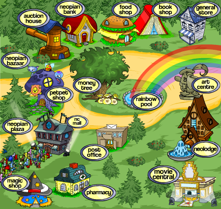
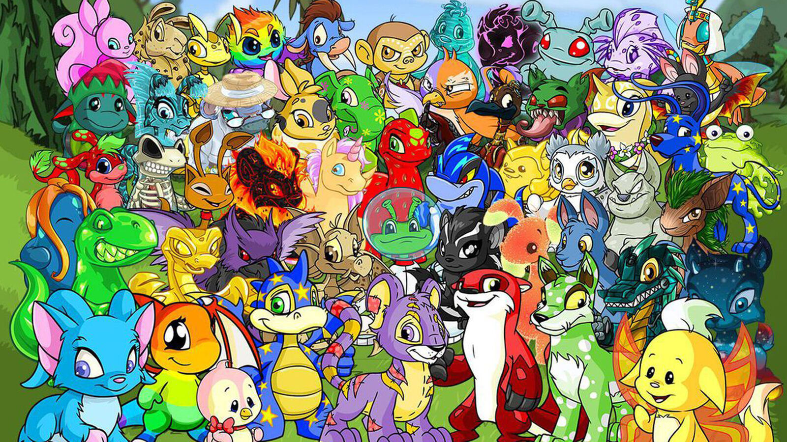
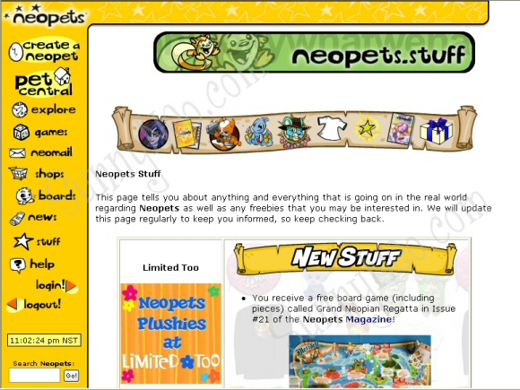

Neopets allows users to create and care for digital pets called "Neopets" and explore the virtual world of Neopia. There is no set objective for the users, but they are expected to feed and care for their Neopets when they grow hungry or ill. Neopets will not die if neglected, but their health can limit their gameplay.Neopets come in a variety of species and colors and users can create or adopt their own. Users can obtain items to interact with their Neopet, such as books to read and toys to play with them. Neopets can be customised with certain clothing items, paintbrushes, morphing potions, and accessories.Neopets can battle against other Neopets or non-player characters in the Battledome but they cannot die there.
Neopets is still a running game today, however it has gone through many changes over the years and its audience has also declined. It is still avalibale to play here: https://www.neopets.com/
   p>Homepage